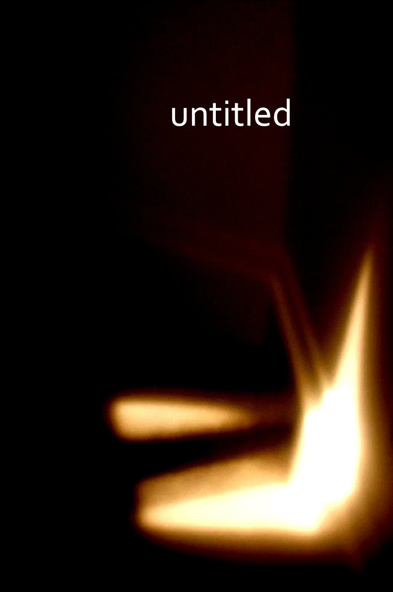
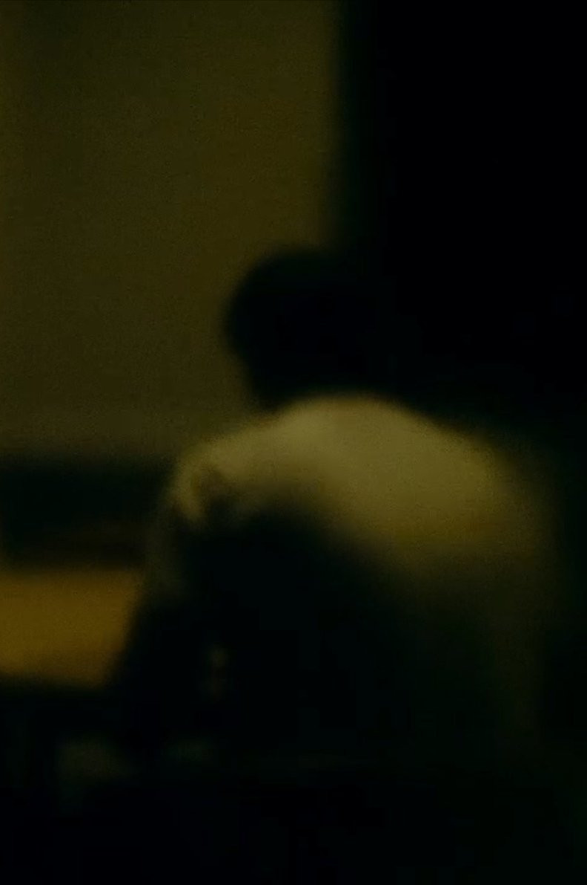
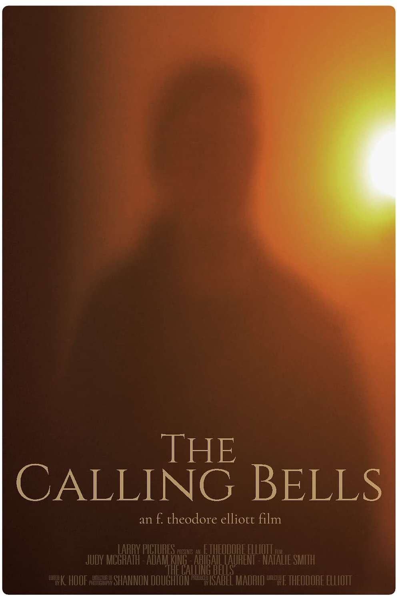

f. theodore elliott
theodore is a filmmmaker
I have made the following films which are avilable for purchase:
(To purchase, any films from AIF please visit the 'Placing An Order' page linked here or on the sidebar.)
i also make music. One day I'll set up a page here with info about all my albums so that I don't have to rely on 3rd party distributors (fuck distributors, the future is self distributed) but in the meantime the best place to check it out is bdancamp
I have made the following films which are avilable for purchase:
(To purchase, any films from AIF please visit the 'Placing An Order' page linked here or on the sidebar.)
i also make music. One day I'll set up a page here with info about all my albums so that I don't have to rely on 3rd party distributors (fuck distributors, the future is self distributed) but in the meantime the best place to check it out is bdancamp

no title (2025)
70 mins
Empty interior landscapes over the course of a single day.
Two Lampposts, Overcast Sunset, 7.58pm-8.34pm Tues 17th Feb 2025 (2025)
36 mins
Two Lampposts, Overcast Sunset, 7.58pm-8.34pm Tues 17th Feb 2025
As this is a shorter film is is sold as a '2 films for the price of 1' bundle with 'no_writhing_now' (below)

no_writhing_now (2025)
33 mins
A man sits at a table reading aloud something he has written.
As this is a shorter film is is sold as a '2 film bundle' with 'Two Lampposts, Overcast Sunset...' (above)
The Limestone Surveyors (2024)
50 mins
After the discovery of a strange mineral in a remote limestone quarry, a group of surveyors are sent in to investigate.
Their analysis begins.
Things start to shift.
The lights go down.
The film begins.
Their analysis begins.
Things start to shift.
The lights go down.
The film begins.

The Tower (1st August 1966) (2023)
67 mins
A minimalist documentary about the events on and around the 1st of August 1966 in Austin Texas.
Two Distant Figures, Walking, In A High Wind (2023)
67 mins
A perfect place to recuperate…
In a recuperation facility for people with a mysterious ailment, two women meet and establish a mystical connection.
She Found A Moviola (2021)
364 mins
An Investigation into a Mystery

The Calling Bells (2021)
59 mins
A lonely woman.
She hears the Bells calling her.
And so she follows.
She hears the Bells calling her.
And so she follows.

The Object Lesson (2018)
72 mins
Briar and Belle live alone in a quiet house on a quiet street. No-one ever visits, and they never leave. Things have always been this way and the two girls know they always will be. They are happy. But fun and games are only fun for so long, and as the playful wanderings of Briar’s mind begin to lead her thoughts into the unknown, the pressure out the world outside the windows begins to push in on their sealed safety and threatens to divide the sisters forever.

Baseball (2016)
82 mins
Everyone around here knows each other now…
Abandoned houses filled with useless old junk. Empty streets in deserted suburbs. And why do the airplanes seem to only be heading west?
‘Baseball’ is a cryptic and hypnotic fever-dream of a world out of sync. Like picture postcards from a parallel universe, a series of static and surreal vignettes reveal the lives of a loose knit group of teenagers trying to find sense in emptiness.
‘Baseball’ is a cryptic and hypnotic fever-dream of a world out of sync. Like picture postcards from a parallel universe, a series of static and surreal vignettes reveal the lives of a loose knit group of teenagers trying to find sense in emptiness.